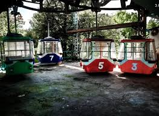
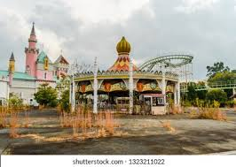
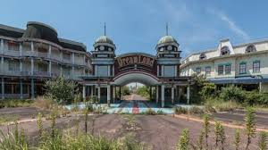

1. Atracciones olvidadas
Se dice que algunas montañas rusas y carruseles continuaban girando durante tormentas, alimentadas por la energía residual de los sistemas eléctricos antiguos.
El Parque Nara Dreamland abrió sus puertas en 1961, inspirado en Disneyland de California, como una alternativa para los visitantes japoneses. Contaba con castillos, montañas rusas y atracciones temáticas muy similares a Disney, convirtiéndose en un destino familiar popular durante décadas.
Durante los años 70 y 80, el parque tuvo su época dorada, recibiendo miles de visitantes cada fin de semana. Sin embargo, la apertura de Tokyo Disneyland en 1983 y la competencia de otros parques temáticos provocaron un lento declive en la asistencia.
Finalmente, el parque cerró en 2006 y permaneció abandonado durante más de una década, hasta ser demolido parcialmente entre 2016 y 2017. Antes de su demolición, se convirtió en un punto de interés para fotógrafos urbanos y exploradores de lugares abandonados.
Se dice que algunas montañas rusas y carruseles continuaban girando durante tormentas, alimentadas por la energía residual de los sistemas eléctricos antiguos.
Exploradores afirman escuchar música de carrusel, risas y voces fantasmales en las zonas abandonadas, aunque el parque llevaba años cerrado.
Algunos rumores indican que la copia de Disneyland fue construida de manera muy similar para probar atracciones y estrategias que luego se aplicarían en Estados Unidos.


